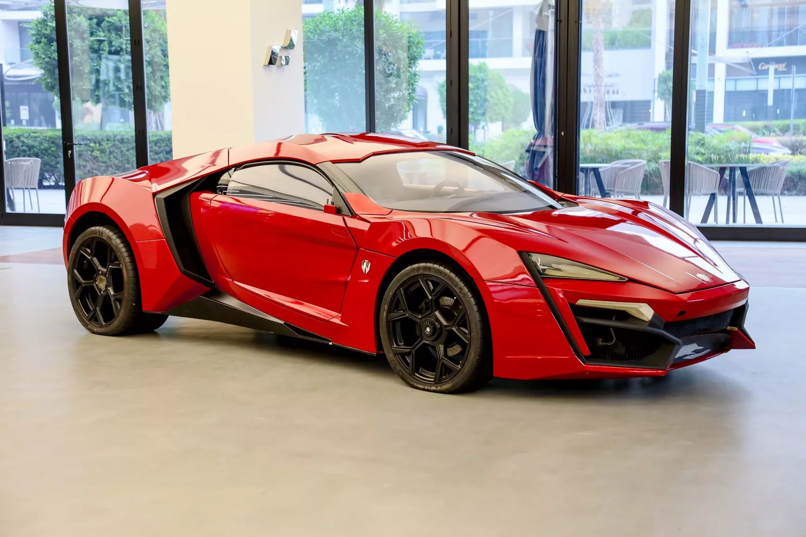
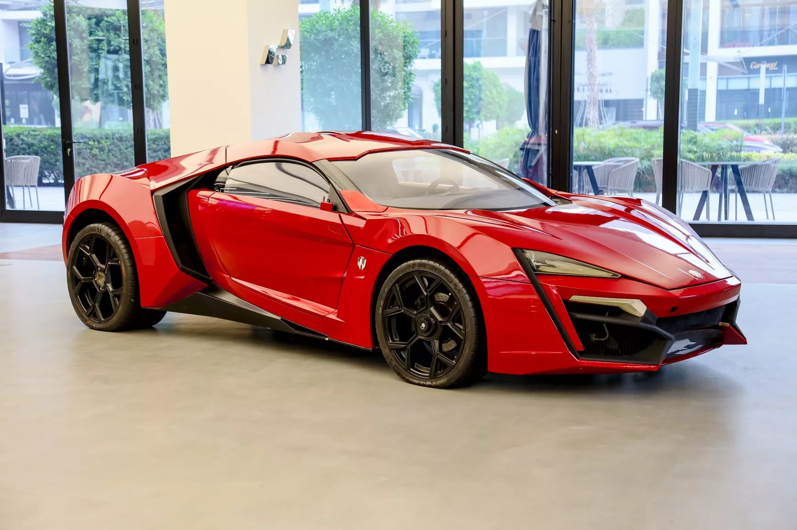

Imagem 1:

Imagem 2:

Imagem 3:
Imagem 1:
Imagem 2:
Imagem 3:
| Nome | Descrição | Data |
|---|---|---|
| Imagem 1: Nissan Skyline GT-R | Veículo clássico do personagem Brian O'Conner de Velozes e Furiosos. | 1 de Novembro de 2012 |
| Imagem 2: Dodge Charger R/T 1970 | Veículo clássico do personagem Dominic Toretto de Velozes e Furiosos. | 2 de Novembro de 2012 |
| Imagem 3: W Motors Lykan HyperSport | Antigo carro mais caro do mundo, utilizado na sétima iteração da saga Velozes e Furiosos. | 17 de Outubro de 2019 |